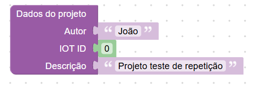
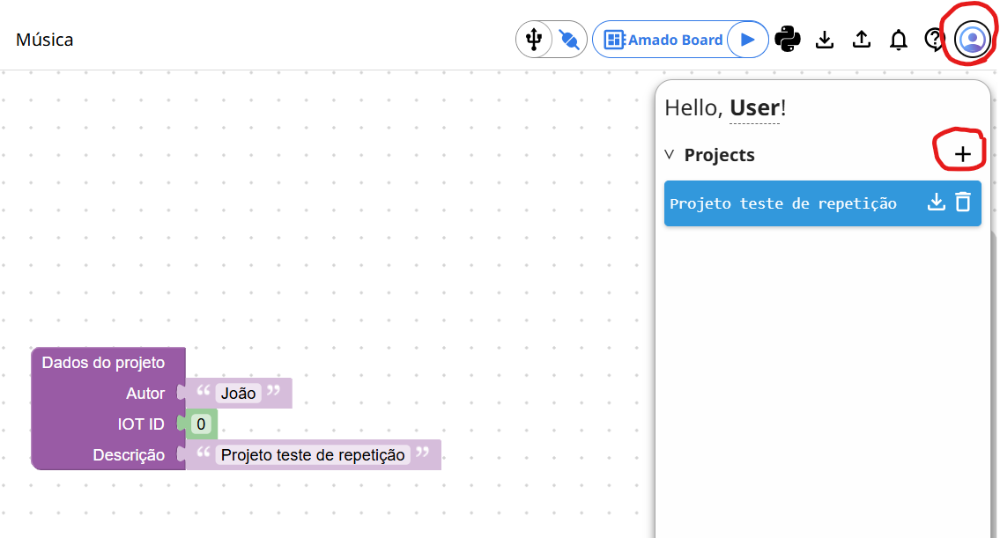
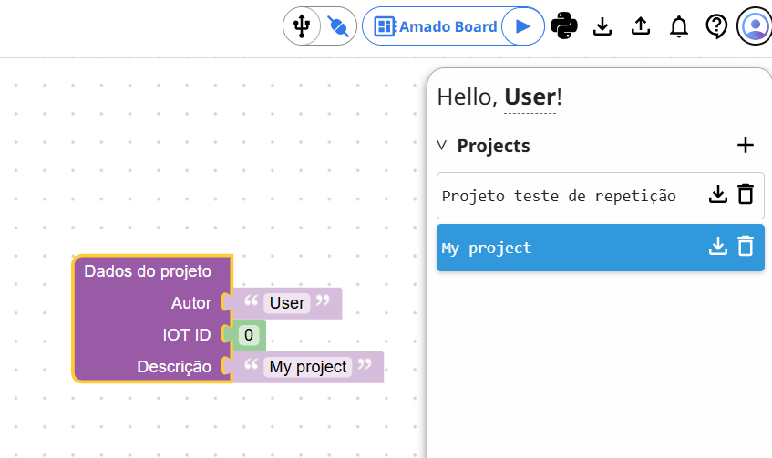
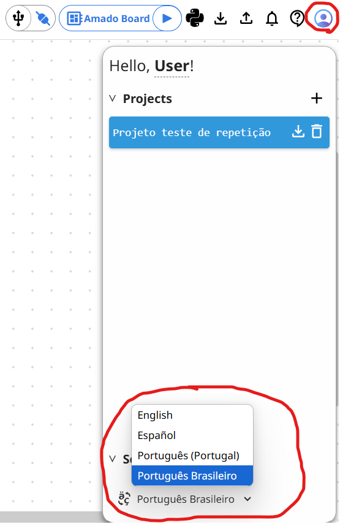
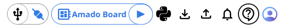
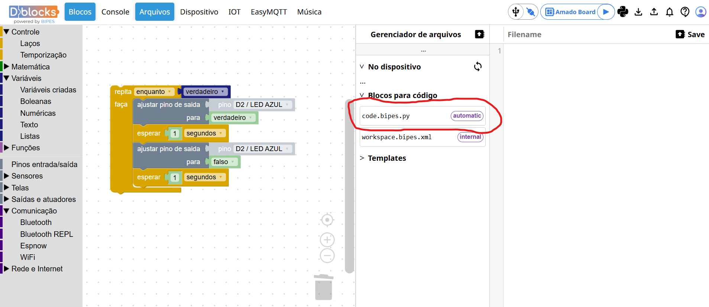
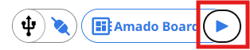
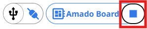

Recursos e funcionalidade
Nesta Seção
Recursos e Funcionalidades
Nesta seção vamos apresentar alguns recursos extras da plataforma que podem facilitar o uso e organização dos seus projetos. Esses detalhes muitas vezes passam despercebidos, mas tornam a experiência com o ambiente ainda mais eficiente.
Bloco de Dados do Projeto
Sempre que um novo projeto é criado, o bloco Dados do projeto aparece automaticamente. Ele é muito útil, pois permite preencher o nome do autor, o ID do projeto (caso esteja integrado com IoT) e uma descrição personalizada. Essa descrição é usada como nome do arquivo quando você exporta o projeto, facilitando sua identificação no computador.
Você também pode encontrar esse bloco na categoria Funções → Bipes e inseri-lo manualmente no projeto, caso necessário.
Trabalhar com múltiplos projetos
Na parte superior da plataforma há um botão de usuário (ícone de perfil). Ao clicar nele, um painel lateral se abre com as opções de gerenciamento de projetos.
 É possível criar vários projetos clicando no botão + e alternar entre eles rapidamente. Essa funcionalidade é excelente para organizar diferentes tarefas, rascunhos ou versões de código.
Idioma da plataforma
Ainda nesse painel, você pode alterar o idioma da interface, escolhendo entre Português, Inglês ou Espanhol. Essa opção aparece na parte inferior do painel.
Outros botões da barra superior
Além do gerenciamento de projetos, a barra superior conta com outros botões muito úteis:
- Python (ícone.): abre diretamente a página de instalação do MicroPython para sua placa.
- Download: baixa o código do projeto no formato
.xml. - Upload: permite carregar um arquivo
.xmlsalvo anteriormente. - Conectar: botão com símbolo USB para conexão da placa com a plataforma.
- Play: executa o programa carregado na placa.
Salvar o programa na placa (main.py)
Uma das funcionalidades mais importantes da plataforma é a possibilidade de salvar o programa diretamente na memória da placa, permitindo que ele seja executado automaticamente sempre que a placa for ligada. Isso é feito ao salvar o código com o nome main.py.
Para isso, é necessário utilizar a aba Arquivos, que funciona como um gerenciador de arquivos interno da placa. Esse recurso é um diferencial da plataforma, pois permite salvar, editar, apagar e executar arquivos diretamente da memória interna do dispositivo.
Siga os passos abaixo para salvar seu programa como 'main.py':
-
Certifique-se de que a placa esteja conectada e nenhum programa esteja em execução (o botão
Playprecisa estar visível).

- Acesse a aba Arquivos.
-
Na seção "Blocos para código", clique em
code.bipes.pypara visualizar seu programa. -
Altere o nome do arquivo clicando sobre code.bipes.py no topo do editor e renomeie para
main.py. - Clique em Salvar uma cópia.
Após salvar, clique novamente duas vezes no refresh para atualizar a lista de arquivos da placa. Você verá o novo arquivo main.py com o rótulo run at boot, indicando que esse será o programa executado automaticamente ao ligar a placa.
Além de salvar, é possível editar ou excluir arquivos diretamente por essa aba. Para excluir o main.py por exemplo, basta clicar no ícone da lixeira ao lado do nome do arquivo.
Observação importante
Em alguns casos, o programa pode continuar rodando mesmo após clicar em Stop. Se isso acontecer, clique no ícone de desconectar, pressione o botão de reset na placa e conecte novamente. O ícone de play deve reaparecer e você poderá acessar a memória da placa normalmente.

Esse comportamento é comum quando você deseja apagar o main.py ou voltar ao uso normal com a plataforma. Sempre que finalizar um projeto e quiser utilizá-lo com uma fonte externa de energia, salve como main.py.